高级
- 1: 项目页面
- 2: 搜索
- 3: 组织
- 4: 形状模式(高级)
- 5: 用矩形标注
- 6: 用多边形标注
- 7: 用椭圆标注
- 8: OpenCV和AI工具
- 9: 自动标注
- 10: 备份任务和项目
- 11: 删除帧
- 12: 导出/导入数据集并上传标注
- 13: 快捷键
- 14: 筛选
- 15: 质检
- 16: 形状分组
1 - 项目页面
项目页面
在此页上，您可以创建新项目，从备份创建项目，还可以查看已创建的项目.
在左上角有一个搜索栏，使用该搜索栏可以通过项目名称、分配人等找到项目. 右上角有排序，快速筛选和筛选.
筛选
应用筛选需禁用快速筛选.
筛选的工作原理与标注筛选类似, 你可以从属性中创建筛选规则, 操作符 和值并将规则分组. 更多细节，请参阅筛选部分. 了解更多关于日期和时间选择.
要清除所有筛选，请按清除筛选.
项目列表支持的属性
| 属性 | 支持的值 | 描述 |
|---|---|---|
分配人员 |
用户名 | 分配人是从事项目的用户. (在项目详情指定) |
所有者 |
用户名 | 拥有项目的用户 |
上次更新 |
最近修改的日期和时间(或取值范围) | 日期可以以dd.MM.yyyy HH:mm的格式输入 或者当你点击输入框时，选择出现在窗口中的日期 |
ID |
项目ID的数字或范围 | |
名称 |
名字 | 在“任务”页上-任务的名称， 在“项目”页上-项目的名称 |
设备 |
AOI和AVI | 检测设备 |
模型属性 |
内层 酸性外层 金OSP等 | AOI下的工序和AVI下的表面处理 |
创建项目
在自训练平台，您可以创建包含相同类型任务的项目. 所有与项目相关的任务都将继承一个标签列表.
要创建项目，请单击顶部菜单中的项目项，进入项目部分.
在“项目”页上，您可以看到项目列表，使用搜索,
或者通过点击+按钮并选择创建新项目来创建一个新项目.
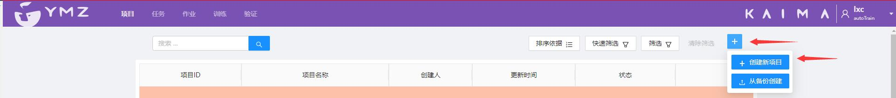
注意，项目将在创建时选择的组织中创建. 阅读更多关于组织的信息.
你可以更改:项目名称, 检测设备(可选)标签列表(将用于作为项目的一部分创建的任务).
如果需要使用项目数据去训练,请设置相应检测设备和工序\表面
了解更多关于创建标签列表.
要保存和打开项目，请单击提交&打开按钮。你也
可以点击提交&继续按钮来依次创建多个项目
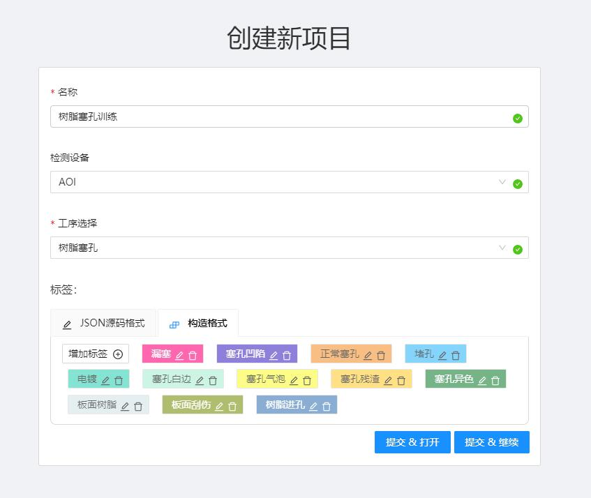
创建后，项目将出现在项目页面上。要打开一个项目，只需单击它.
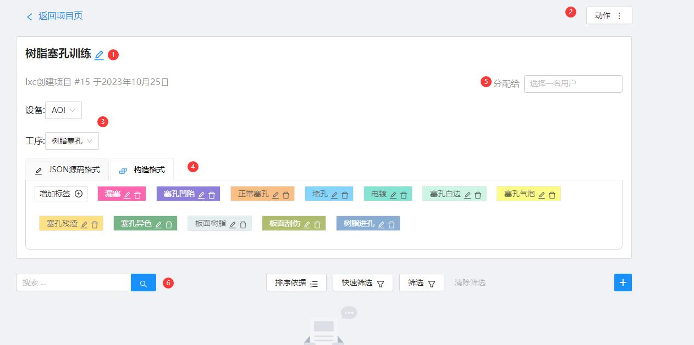
在这里，您可以执行以下操作:
-
更改项目的标题.
-
打开
动作菜单。每个按钮负责动作菜单中的特定功能: -
更改项目的设备和模型属性
-
更改标签. 您可以在
JSon源码模式或构造模式下为现有标签添加新标签或属性. 您还可以更改不同标签的颜色. -
分配给 — 用于将一个项目分配给一个人. 开始输入分配人的名字和/或从下拉列表中选择正确的人.
-
任务— 具有搜索功能的特定项目的所有任务列表, 对项目中的任务进行排序和筛选. 阅读更多关于搜索的内容. 阅读更多关于排序和筛选的内容 可以为项目中的任务选择一个子集. 你可以使用可用的选项(训练、测试、验证)或者设置你自己的选项.
2 - 搜索
- 搜索所有字段(所有者、分配人、任务名称、任务状态). 要执行，请在搜索字段中输入搜索文本.
3 - 组织
组织是指由多个用户组成的团队在项目中一起工作并共享任务的特性.
创建一个组织，邀请你的团队成员，并分配角色，以使团队更好地完成共享的任务.
参阅:
个人工作区
当没有选择组织时，帐户的默认状态是激活的.
如果您没有选择一个组织，系统会将所有新资源直接链接到您的个人账户，从而阻止与他人共享资源.
当个人工作区被选中时，它将在菜单中被标记为一个标记.
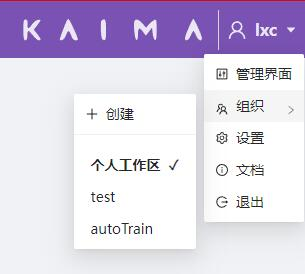
新建组织
要创建一个组织，请执行以下操作:
-
登陆自训练平台.
-
在顶部菜单中，点击你的用户名 > 组织 > + 创建.
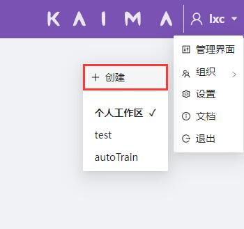
-
填写以下字段并单击提交

| 字段 | 描述 |
|---|---|
| 简短名称 | 将显示在菜单中的组织名称. |
| 完整名称 | 可选的。组织的全称. |
| 描述 | 可选的。组织描述. |
| 电子邮箱 | 可选的。你的电子邮件. |
| 电话号码 | 可选的。你的电话号码. |
| 地址 | 可选的。组织地址. |
创建后，组织页面将自动打开.
如果想要将来访问您的组织，请访问用户名 > 组织
备注, 如果你创建了超过10个组织, 下拉菜单中会出现一行切换组织.
切换组织
如果你有多个组织， 可以在任何给定的时间在这些组织之间切换.
按照这些步骤操作:
- 在顶部菜单中，选择您的用户名 > 组织.
- 在个人空间部分的下拉菜单中, 选择您想要的组织.
组织页面
组织页面是一个可以编辑组织信息和管理组织成员的地方.
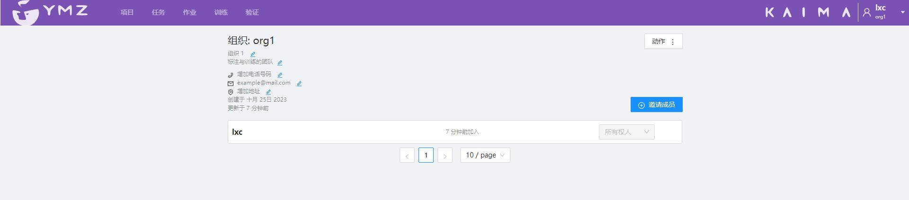
备注 为了访问组织页面，你必须首先激活 该组织 (详情请参阅 切换组织). 如果没有激活，组织页面将保持不可访问.
当在下拉菜单中勾选一个组织，并且该组织的名称在右上角的用户名下可见时, 则认为该组织已激活.
要进入组织页面，请执行以下操作:
- 在顶部菜单中，点击你的用户名 > 组织.
- 在下拉菜单中选择组织.
- 在下拉菜单中，单击设置.
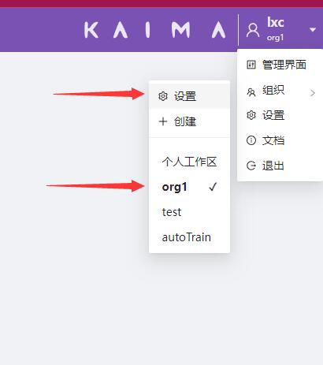
邀请成员进入组织
要向组织添加成员，请执行以下操作:
-
转到组织页面，然后点击邀请成员.
-
填写表格(见下文).
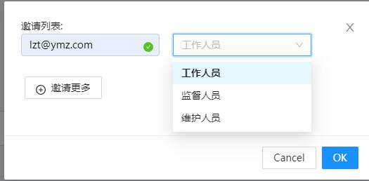
-
单击 Ok.
邀请成员表单包含以下字段:
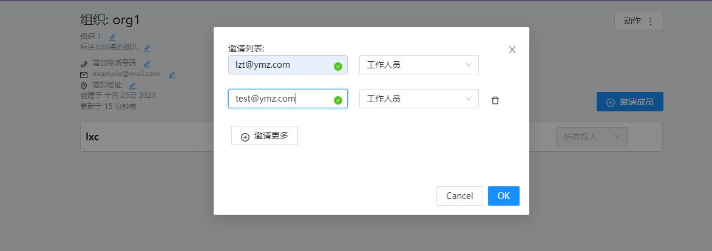
| 字段 | 描述 |
|---|---|
| 邮箱 | 被添加到组织的用户的邮箱地址. 备注, 你邀请的用户必须已经在你发送邀请的电子邮件地址注册了帐户(在同一个实例上). |
| 角色下拉列表 | 定义用户的角色，该角色设置了在组织内的访问级别: |
| 邀请更多 | 将另一个用户添加到组织的按钮. |
组织的成员将显示在组织页面中。
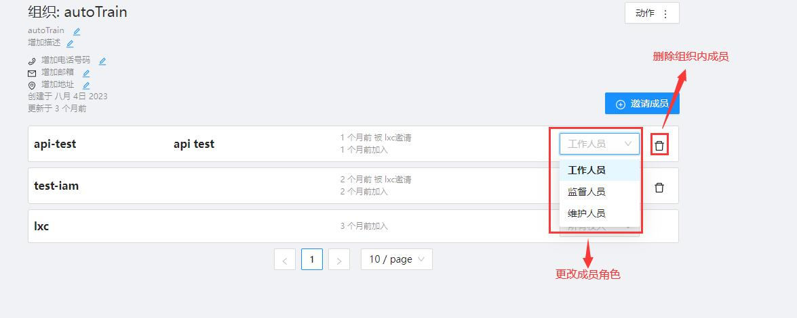
组织成员可以离开组织
进入组织页面 > 离开组织.
组织所有者可以通过点击垃圾箱图标.
删除组织
您可以删除您创建的组织.
备注: 删除组织将删除所有相关资源 (标注, 作业, 任务, 项目等).
要移除一个组织，请执行以下操作:
- 跳转到组织页面.
- 在右上角单击动作 > 移除组织.
- 在对话框字段中输入组织的短名称.
- 单击 移除.
4 - 形状模式(高级)
该模式下的基础操作已在这一部分介绍: 形状模式(基础).
遮挡
遮挡是一个属性，当一个对象被另一个对象遮挡，或者在帧上不完全可见时使用.
使用快捷方式Q快速设置属性.

示例:下图中的三辆车应该标记为被遮挡.

如果一个框架包含太多的对象，并且由于许多形状大多放置在同一个位置，
所以很难对它们进行标注，那么将它们锁定是有意义的
锁定对象的形状是透明的，并且很容易标注新对象
此外，您不能意外地更改之前注释过的对象。快捷方式:L

5 - 用矩形标注
要了解有关使用矩形进行标注的更多信息，请参阅各节:
矩形旋转
要旋转矩形，拉旋转点. 旋转是围绕矩形的中心进行的.
以固定的角度旋转(15度的倍数),按住shift键。
在旋转的过程中，可以看到旋转的角度.
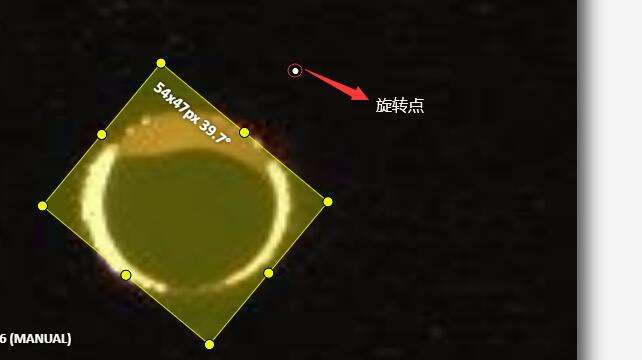
用矩形标注4点
这里提出了一种有效的边界框标注方法. 在开始之前，您需要确保选择4点绘制方法.
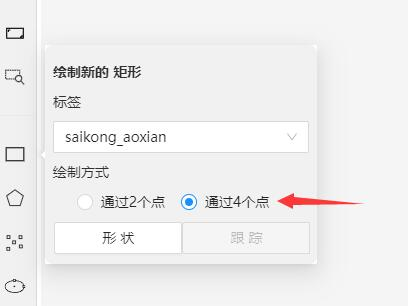
按形状进入绘图模式。点击四个极值点:
物体上最上面、最下面、最左边和最右边的物理点.
点击第四个点后，绘图将自动完成.
按Esc取消编辑.

6 - 用多边形标注
6.1 - 手动绘制
它用于语义/实例分割.
在开始之前，您需要在控制栏上选择多边形并选择正确的标签.
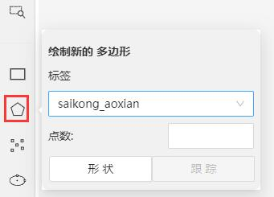
- 点击“形状”进入绘图模式. 有两种绘制多边形的方法: 通过点击或在屏幕上拖动鼠标同时按住“Shift”创建点.
| 点击 | 按住Shift+拖拽 |
|---|---|
 |
 |
- 未按
Shift键时，可以放大/缩小(滚动鼠标滚轮时) 和移动(点击鼠标滚轮并移动鼠标时), 也可以右键删除前一点. - 你可以使用
对象侧边栏中的选定不透明度滑块来改变多边形的不透明度. 您可以在对象侧边栏章节中阅读更多内容. - 再次按
N或点击顶部面板上的完成按钮来完成形状. - 创建多边形后，您可以移动点或通过右键单击并选择
删除点来删除它们 或在上下文菜单中按下Alt键单击.
6.2 - 使用自动边界绘图
绘制多边形时可以使用自动边框. 使用自动边框可以自动跟踪标注中现有多边形的轮廓.
-
要做到这一点，请进入设置->工作区选项卡并启用
自动边界或在绘制多边形时按Ctrl键.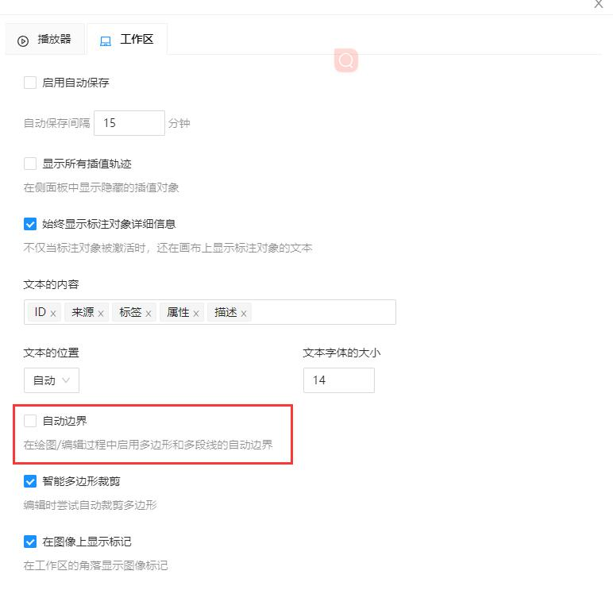
-
开始绘制/编辑多边形.
-
其他形状的点将被突出显示，这意味着多边形可以附加到它们上.
-
定义要重复的多边形路径部分.

-
点击轮廓部分的第一个点.

-
然后单击位于路径部分的任何点。选中的点将以紫色高亮显示.

-
点击最后一个点，这个点的轮廓将自动生成.
此外，您可以在点数字段中设置固定的点数, 然后自动停止绘制. 要启用拖动，你应该在多边形内部右键单击并选择切换固定属性.
下面你可以看到不透明度和黑色描边的效果:

如果您需要标注小物体, 请将创建任务对话框中的图像质量增加到95，以便您方便.
6.3 - 编辑多边形
要编辑一个多边形，你必须在按住Shift的同时点击它，它将打开多边形编辑器.
-
在编辑器中，您可以创建新的点或通过关闭另一个点上的线来删除多边形的一部分.
-
当
智能多边形裁剪选项在设置中激活时, 考虑两个标准来决定在自动编辑过程中应该切断多边形的哪一部分.- 第一个标准是切割点的数量.
- 第二个标准是切割曲线的长度.
如果两个标准都建议切割相同的部分，则算法自动工作，如果不是，则必须由用户做出决定. 如果你想手动选择一个多边形的哪一部分应该被切断, 在设置中禁用
智能多边形裁剪。 在这种情况下，关闭多边形后，您可以选择要保留的多边形部分. -
您可以按
Esc取消编辑.
7 - 用椭圆标注
用于道路标志标注 工业中标隔离圈 通孔等用于分割.
先，你需要选择控制栏上的椭圆.
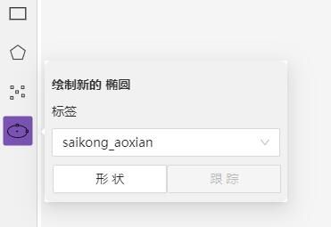
选择一个标签，然后点击形状开始绘制. 椭圆的创建方法与矩形相同, 你需要指定两个相对的点,
这个椭圆会被嵌在一个想象的矩形中. 按N或点击顶部面板上的完成按钮来完成形状.
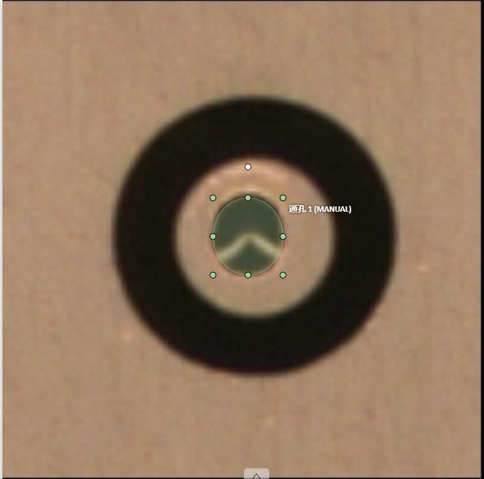
你可以使用旋转点旋转椭圆，方法与矩形相同.
8 - OpenCV和AI工具
在AI和OpenCV工具的帮助下，以半自动和自动模式对数据进行标注.
参阅:
交互器
交互器是AI和OpenCV工具的一部分.
使用交互器标记图像中的对象 半自动创建多边形.
创建多边形时，可以使用正点 或者是负点(对于某些模型):
- 正点定义对象所在的区域。
- 负点定义对象不在的区域。

AI工具: 使用交互器标注
要使用交互器进行标注，请执行以下操作:
- 点击魔术棒
 , 然后转到交互器标签页.
, 然后转到交互器标签页. - 从标签下拉菜单中，选择多边形的标签.
- 从交互器下拉菜单中，选择一个模型 (详阅 交互器模型).
点击问号以查看每个模型的信息:
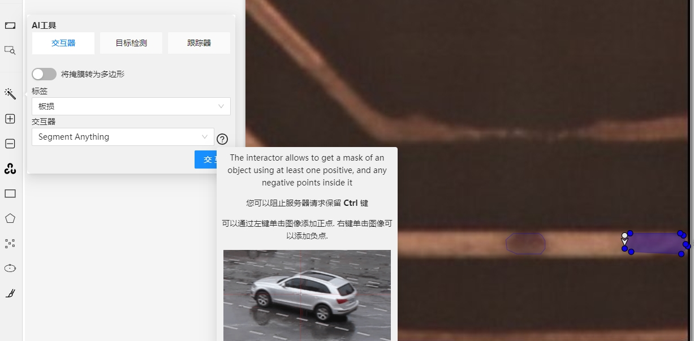 - (可选)如果模型返回掩膜，你需要 转换掩膜到多边形，使用转换掩膜到多边形切换.
- 点击 交互.
- 左键点击可添加正点，右键点击可添加负点.
可以添加的点数取决于模型. - 在顶部菜单, 点击 完成 (或者 Shift+N, N).
AI工具: 增加额外的点
**注意:**更多的点可以提高轮廓的准确性，但会使形状编辑更加困难. 较少的点使形状编辑更容易，但降低了轮廓精度.
每个模型都有一个用于注释的最小所需点数。 一旦达到了所需的点数，就开始请求自动发送到服务器。 服务器处理请求并向帧中添加一个多边形。
为了得到一个更准确的轮廓, 首先推迟服务器的请求来增加点数:
- 按住Ctrl键.
在顶部面板上，推迟按钮将变成蓝色. - 向图像中添加点.
- 当准备好时，松开Ctrl键.
如果你在对象完成时使用了将掩膜转为多边形， 你可以像编辑多边形一样编辑它.
你可以用滑块改变多边形的点数:

AI工具: 删除点
要删除一个点，请执行以下操作:
- 将光标悬停在要删除的点上.
- 如果这个点可以被删除，它会放大，光标会变成一个十字.
- 左键点击这个点.
OpenCV: 智能剪刀
要使用智能剪刀, 请执行以下操作:
-
在菜单栏上，单击 OpenCV
 然后等待库加载.
然后等待库加载.
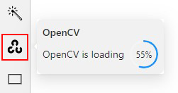 -
转到Drawing选项卡，选择标签，并单击智能剪刀按钮.
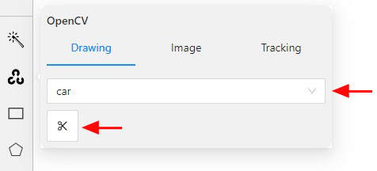
-
在已分配对象的边界上添加第一个点.
你会看到一条线重复物体的轮廓. -
添加第二个点，使前一个点在限制阈值内.
之后，在这些点之间会自动创建一条重复对象边界的线.
-
要完成放置点，在顶部菜单上单击完成(或键盘上的N).
这样就创建了一个多边形.
你可以用滑块改变多边形的点数:
要增加或降低操作阈值，按住Ctrl并滚动鼠标滚轮.
在绘制过程中，可以用鼠标左键点击最后一个点来删除它.
设置
交互器模型
| 模型 | 工具 | 描述 | 例子 |
|---|---|---|---|
| Segment Anything Model (SAM) | AI工具 | 分割任意模型(SAM)产生高 质量的对象掩膜，它可用于生成图像中所有对象的 掩膜。它在包含1100万张图像的数据集 和 11亿个掩膜的数据集上进行了训练，并在各种分割任务上具有强大的零样本性能。 更多信息，请参见: |
 |
| Deep extreme cut (DEXTR) |
AI工具 | 这是原始模型的优化版本， ，于2017年底推出。它使用对象 的极值点的 信息来获得它的掩膜。然后掩膜 被转换为多边形。 目前这是CPU上最快的交互器。 更多信息，请参见: |
|
| Feature backpropagating refinement scheme (f-BRS) |
AI工具 | 该模型允许使用正点(应该在前景上左键点击) 和负点(如果需要，应该在背景上右键点击) 掩膜 。如果可能的话，建议在GPU上运行模型。 有关更多信息，请参见: |
|
| High Resolution Net (HRNet) |
AI工具 | 该模型允许使用正点(应该在前景上左键点击) 和负点(如果需要，应该在背景上右键点击) 掩膜 。如果可能的话，建议在GPU上运行模型。 有关更多信息，请参见: |
 |
| Inside-Outside-Guidance (IOG) |
AI工具 | T他的模型使用边界框和内部/外部点来创建一个掩膜。 首先，你需要创建一个边界框来包裹对象。 然后你需要使用正负点来 告诉模型哪里是前景，哪里是背景。 负点是可选的。 有关更多信息，请参阅:: |
 |
| 智能剪刀 | OpenCV | 智能剪刀是一种CV方法， 通过放置点并在点与点之间 自动绘制直线来创建多边形。 相邻点之间的距离受到动作阈值的限制， 显示为与光标绑定的红色正方形。 有关更多信息，请参见: |
 |
目标检测
目标检测是AI工具的一部分.
使用目标检测自动识别和定位图像中的物体.
标签匹配
每个模型都是在数据集上训练的，并且只支持数据集的标签.
例如:
- DL模型的标签为
缺口. - 你的任务(或项目)的标签是
针孔.
为了进行标注，您需要匹配这两个标签以给DL模型一个提示，
在本例中为缺口 = 针孔。
如果你有一个不在DL标签列表中的标签，你将无法匹配它们.
因此，支持的深度学习模型只适用于某些标签.
要查看每个型号的标签列表，请参见 目标检测模型.
使用目标检测标注
要使用目标检测进行标注，请执行以下操作:
-
点击魔术棒
, 然后转到目标检测选项卡. -
从模型下拉菜单中选择模型 (参见 目标检测模型).
-
从左下拉框中选择DL模型标签，从右下拉框中选择与您的任务匹配的标签.
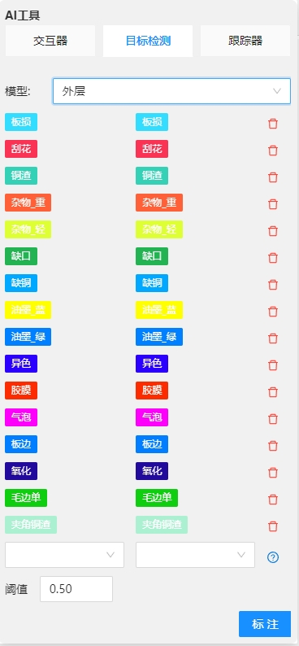
-
(可选)如果您需要改变预标注的阈值，可填入阈值(区间为(0,1)) 默认0.5..
-
点击 标注.
这个动作会自动标注一帧. 参见自动标注.
目标检测模型
| 模型 | 描述 |
|---|---|
| 内层 | 用于AOI内层检测使用的AI模型 |
| 酸性外层 | 用于AOI酸性外层检测使用的AI模型 |
| 碱性外层 | 用于AOI碱性外层检测使用的AI模型 |
| 树脂塞孔 | 用于AOI树脂塞孔检测使用的AI模型 |
| 金OSP | 用于AVI金OSP 检测使用的AI模型 |
9 - 自动标注
宜美智自训练中的自动标注是一种您可以使用预训练模型自动预标注数据的工具.
参见:
运行自动标注
要开始自动标注，请执行以下操作:
-
在顶部菜单上，单击任务.
-
找到你想标注的任务，点击动作 > 自动标注.
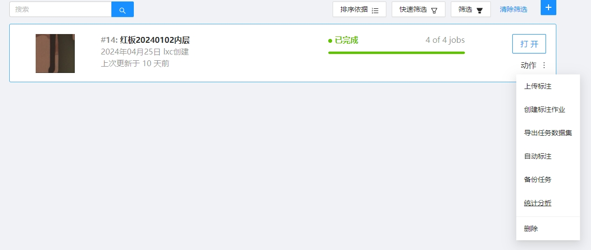
-
在自动标注对话框中，从下拉列表中选择一个 模型.
-
匹配 模型和任务的标签.
-
(可选)如果您需要改变预标注的阈值，可填入阈值(区间为(0,1)) 默认0.5.
-
(可选)如果你需要删除所有之前的标注，切换到清除旧标注。
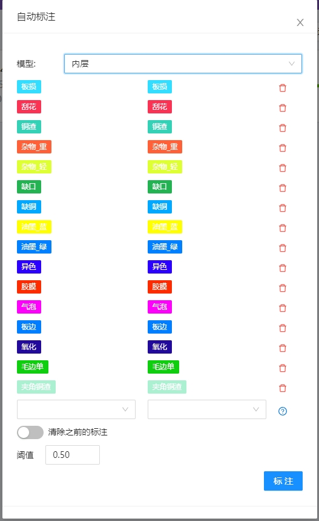
1.点击标注.
后会在进度条上显示注释的进度.
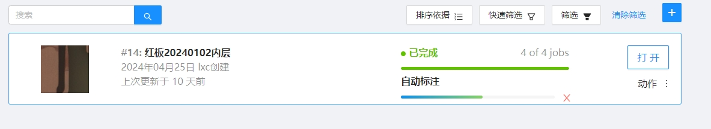
单击“取消”可以随时停止自动标注.
标签匹配
每个模型都是在数据集上训练的，并且只支持数据集的标签.
例如:
- DL模型的标签为
缺口. - 你的任务(或项目)的标签是
针孔.
为了进行标注，您需要匹配这两个标签以给DL模型一个提示，
在本例中为缺口 = 针孔。
如果你有一个不在DL标签列表中的标签，你将无法匹配它们.
模型
| 模型 | 描述 |
|---|---|
| 内层 | 用于AOI内层检测使用的AI模型 |
| 酸性外层 | 用于AOI酸性外层检测使用的AI模型 |
| 碱性外层 | 用于AOI碱性外层检测使用的AI模型 |
| 树脂塞孔 | 用于AOI树脂塞孔检测使用的AI模型 |
| 金OSP | 用于AVI金OSP 检测使用的AI模型 |
10 - 备份任务和项目
概述
在标注平台上，您可以备份任务和项目。 这可以用于备份您PC上的任务或项目，或传输到另一台服务器.
创建备份
要备份任务或项目，请打开操作菜单并选择“备份任务”或“备份项目”。.
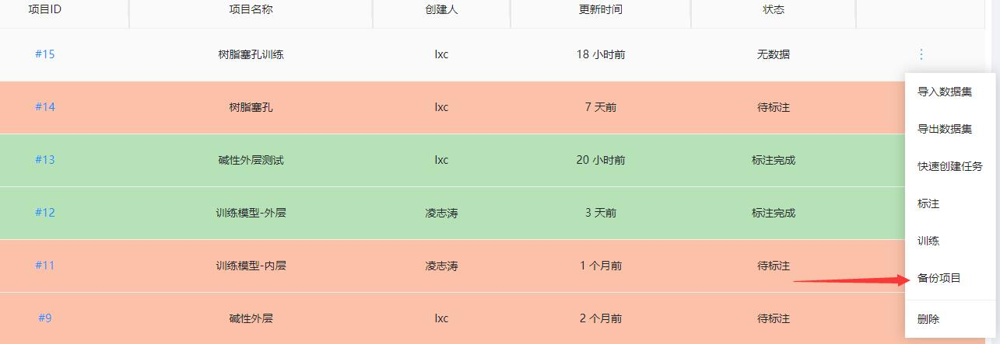
(可选) 在自定义文件名文本字段中指定备份文件名称,
否则备份项目的文件名称将由掩码 project_<项目名>_backup_<日期>_<时间>.zip给出
备份任务的文件名task_<任务名>_backup_<日期>_<时间>.zip.
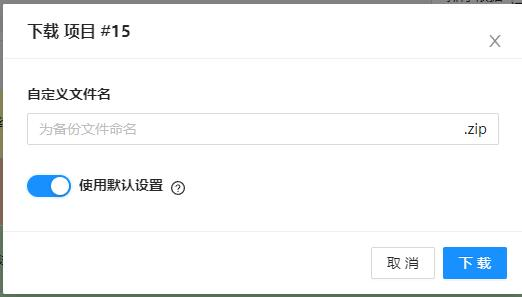
从备份中创建
要从备份创建任务或项目，请转到任务或项目页面,
单击从备份创建按钮并选择所需的存档.
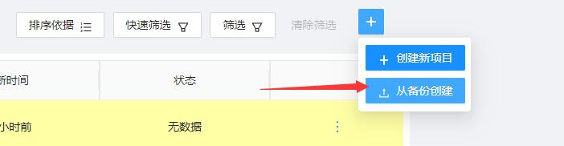
结果，您将得到一个任务，其中包含先前导出的任务的数据、参数和标注.
备份文件结构
结果，你会得到一个包含数据的zip存档, 任务或项目，任务规范和标注具有以下结构:
.
├── data
│ └── {用户上传的数据}
├── task.json
└── annotations.json
.
├── task_{id}
│ ├── data
│ │ └── {用户上传的数据}
│ ├── task.json
│ └── annotations.json
└── project.json
11 - 删除帧
删除帧
您可以从任务中删除当前帧. 这一帧既不会出现在UI中，也不会出现在导出的标注中. 因此，可以标记不受标注约束的损坏帧.
-
转到作业标注视图，点击删除图像按钮(Alt+Del).
备注: 当您使用快捷方式删除时, 该帧将立即被删除，无需额外确认.
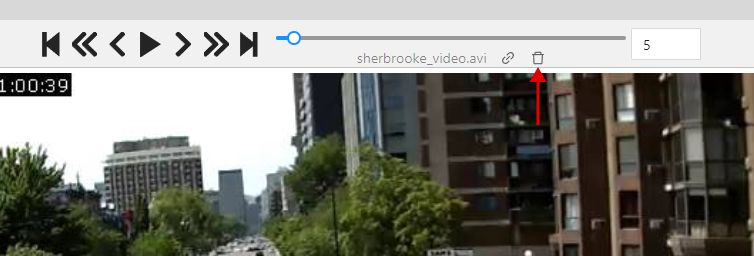
-
之后，您将被要求确认帧删除.
备注: 该帧中的所有标注将被删除，未保存的标注将被保存 并且该帧将在标注视图中不可见(直到您在设置中使其可见). 如果任务中有一些重叠，并且删除的帧落在这个间隔内, 那么这将导致该帧在另一个作业中也不可用.
设置已删除帧的可见性和导航
I如果您需要启用显示删除的帧，您可以在设置中这样做.
-
进入设置，选择播放器设置.

-
点击显示已删除的帧复选框。然后关闭设置对话框.
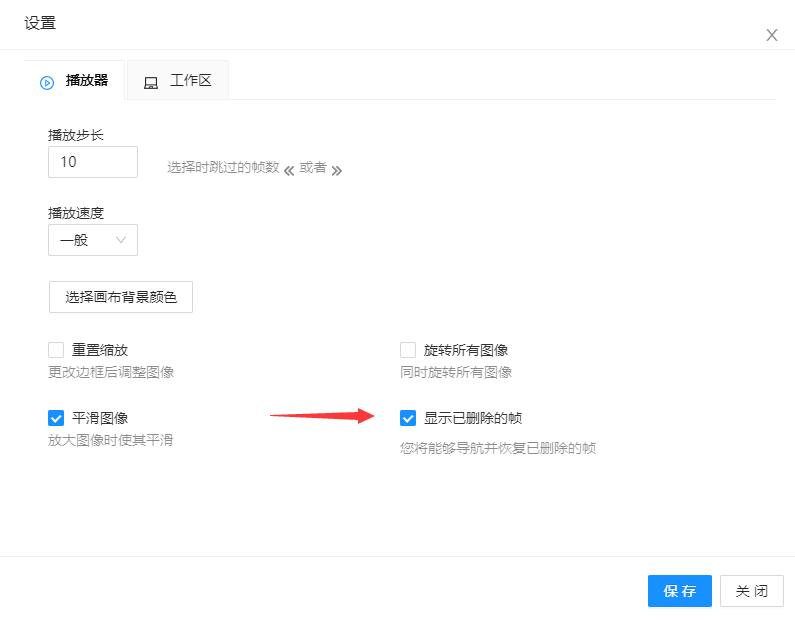
-
然后，您将能够浏览已删除的帧. 但是标注工具将不可用。删除的帧在相应的叠加中不同.
-
有几种视图方法可以在不启用此选项的情况下浏览已删除的帧:
- 通过直接导航方法转到框架:导航滑块或框架输入字段,
- 通过直接链接进入框架.
-
带有步长的导航将不计算已删除的帧.
恢复删除的帧
您还可以在任务中恢复已删除的帧.
-
如前面所述，打开已删除帧的可见性，然后转到要恢复的已删除帧.
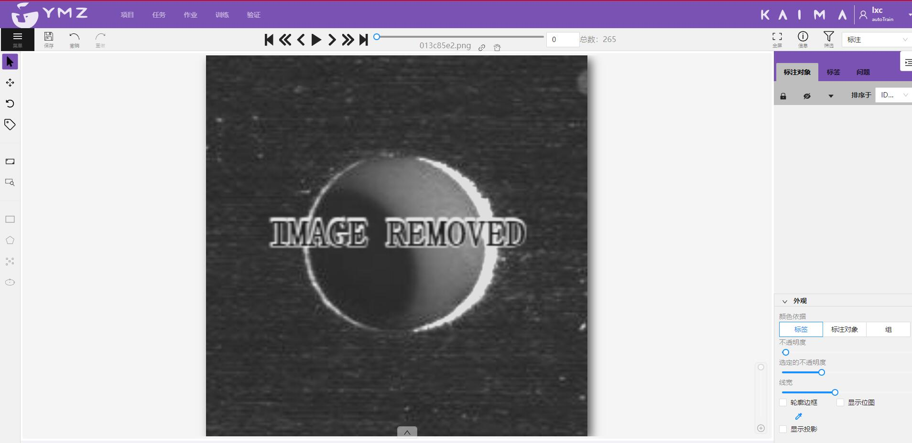
-
点击还原图标。框架将立即恢复.
12 - 导出/导入数据集并上传标注
导出数据集
可以将数据集导出到项目、任务或作业.
-
要下载最新的标注，必须首先保存所有更改. 点击
保存按钮。有一个快捷键Ctrl+S来快速保存标注.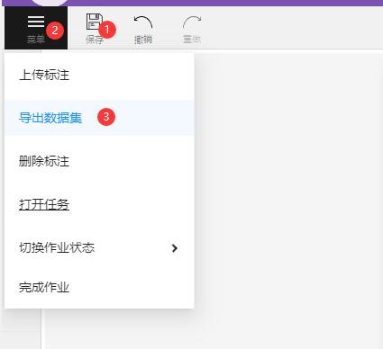
-
之后，点击
菜单按钮. 任务和项目数据集的导出和导入通过动作菜单进行. -
按
导出数据集按钮.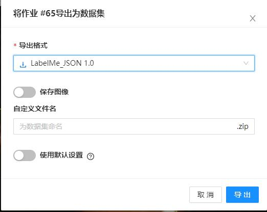
-
选择导出数据集的格式.
-
要使用数据集下载图像，请启用
保存图像选项. -
(可选)要给结果归档文件命名，请使用
自定义文件名字段.
导入数据集
您只能将数据集导入项目。在这种情况下，数据将被划分为子集.
要导入数据集，请在项目页面上执行以下操作:
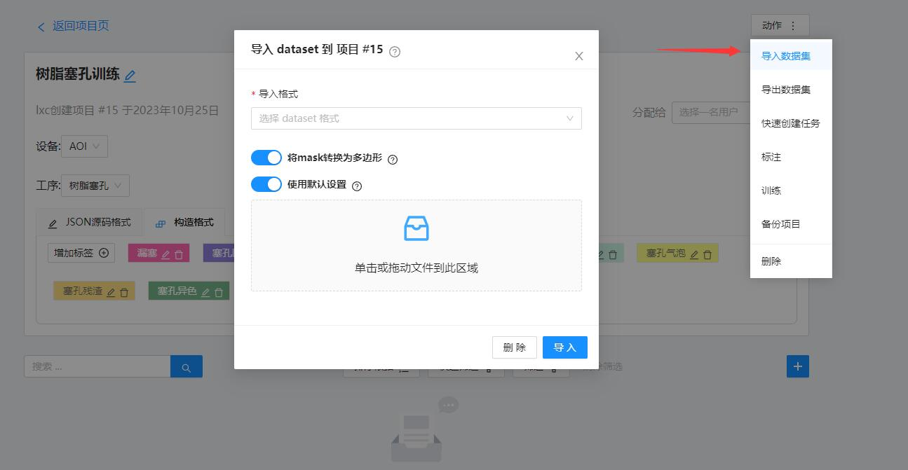
- 打开
动作menu. - 按
导入数据集按钮. - 选择数据集格式(如果在导出期间没有指定自定义名称，则格式将在存档名称中).
- 将文件拖动到文件上传区域或单击上传区域，通过资源管理器选择该文件.
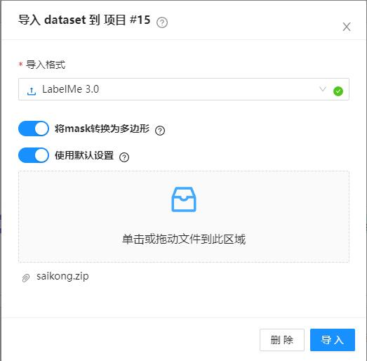
在导入过程中，您将能够跟踪导入的进度。
上传标注
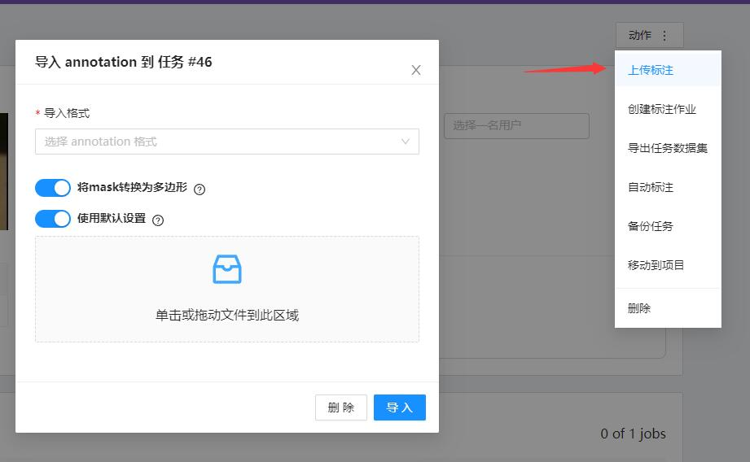
在任务或作业中，您可以上传标注。
为此，在任务的动作菜单中或在顶部面板的作业菜单中选择上传标注项，
选择您计划上传标注的格式，并通过资源管理器选择标注文件或存档.
13 - 快捷键
许多UI元素都有快捷提示。将你的指针指向一个必需的元素来查看它.
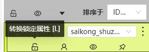
| 快捷键 | 常见 |
|---|---|
| 主要功能 | |
F1 |
打开/隐藏可用快捷键列表 |
F2 |
打开/隐藏设置对话框 |
Ctrl+S |
将标注的所有更改发送到服务器 |
Ctrl+Z |
取消与对象相关的最新操作 |
Ctrl+Shift+Z 或 Ctrl+Y |
取消撤消操作 |
按住鼠标滚轮 |
动图像帧(例如，在绘制时)。 |
| 播放器 | |
F |
转到下一帧 |
D |
转到前一帧 |
V |
向后移动多少帧，取决于设置里的步长 |
C |
向前移动多少帧，取决于设置里的步长 |
-> |
搜索满足筛选 的下一帧或包含任何对象的下一帧 |
<- |
搜索满足筛选 的前一帧或包含任何对象的前一帧 |
空格 |
启动/停止自动换帧 |
` 或 ~ |
聚焦在元素上以改变当前帧 |
| 模式 | |
N |
用相同的参数重复最新的绘图过程 |
M |
激活或禁用合并形状的模式 |
Alt+M |
激活或停止分割形状的模式 |
CTRL+G |
激活或停用模式来分组形状 |
Shift+G |
重置选定形状的组(在组模式下) |
Esc |
取消任何活动的画布模式 |
| 图像操作 | |
Ctrl+R |
改变图像角度(增加90度) |
Ctrl+Shift+R |
改变图像角度(减去90度) |
G |
显示/隐藏GERBER |
| 对象的操作 | |
Ctrl |
在绘图/编辑期间切换多边形和折线的自动边界 |
按住 Ctrl |
当形状处于活动状态时进行修复 |
在点上Alt+单击 |
删除点(当鼠标悬停在多边形、折线、点组成的点上时使用) |
在点上Shift+单击 |
编辑形状(当鼠标悬停在多边形、折线或点的一个点上时使用) |
在形状上->-单击 |
显示对象侧边栏中的对象元素 |
T+L |
更改侧边栏中所有对象的锁定状态 |
L |
更改活动对象的锁定状态 |
T+H |
更改侧边栏中对象的隐藏状态 |
H |
更改活动对象的隐藏状态 |
Q 或 / |
更改活动对象的锁定属性 |
Del 或 Shift+Del |
删除活动对象。使用shift强制删除锁定对象 |
- 或 _ |
把一个活动对象放到离用户更远的地方(减小z轴的值) |
+ 或 = |
将活动对象“更靠近”用户(增加z轴值) |
Ctrl+C |
复制形状到内部剪贴板 |
Ctrl+V |
从内部剪贴板粘贴一个形状 |
粘贴时按住Ctrl |
当粘贴形状从缓冲区f或多次粘贴. |
Ctrl+B |
在下面的帧中复制对象 |
Ctrl+(0..9) |
更改标签f或激活的对象或f或如果没有对象被激活，则下一个绘制的对象 |
14 - 筛选
使用该功能有一些原因:
- 使用筛选时，与过滤器不匹配的对象将被隐藏.
- 快速导航到包含感兴趣对象的帧之间.
你可以使用键盘上的
左箭头和右箭头键来实现这个目的， 或者通过右键单击并选择通过筛选切换来自定义用户界面按钮。 如果没有与筛选条件匹配的对象，你将前进到包含任何已注释对象的前一帧或下一帧.
要使用筛选，你需要点击顶部面板上的按钮.
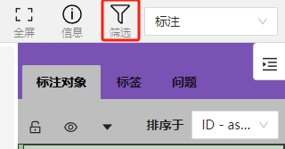
新建筛选
它将打开一个窗口用于筛选输入。在这里你会发现两个按钮:Add rule和Add group.
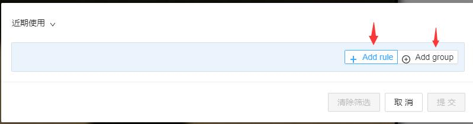
规则
Add rule按钮为对象显示添加规则。规则可以使用以下属性:

支持的标注属性
| 属性 | 支持的值 | 描述 |
|---|---|---|
标签 |
任务中的所有标签名称 | 标签名 |
类型 |
形状，轨迹或标签 | 对象的类型 |
形状 |
所有形状类型 | 形状的类型 |
覆盖 |
真或假 | 覆盖 (详情) |
宽度 |
单位px | 形状宽度 |
高度 |
单位px | 形状高度 |
服务器ID |
数字 | 服务器上对象的ID (您可以通过动作菜单形成到对象的链接来查找) |
对象ID |
数字 | 客户端中对象的ID (在对象侧栏中指出) |
属性 |
其他一些字段包括具有 类似类型或特定属性值的属性 |
由标签指定的任何字段 |
支持的属性运算符
== - 等于; != - 不等于; > - 大于; >= - 大于等于; < - 小于; <= - 小于等于;
Any in; Not in - 这些操作符允许您在一条规则中设置多个值;
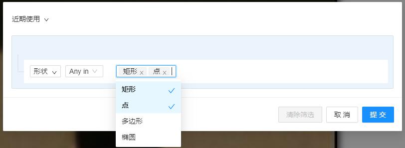
Is empty; is not empty – 这些操作符不需要输入值,意思是为空和非空.
Between; Not between – 这些操作符允许您在两个值之间选择一个范围.
Like - 此操作符指示属性必须包含一个值.
Starts with; Ends with - 按开头或结尾筛选.
有些属性支持您可以选择的两种类型的值:
您可以添加多个规则，为此单击add rule按钮并设置另一个规则.
一旦你设置了一个新规则，你就可以选择通过哪个操作符来连接它们: And 或者 Or.
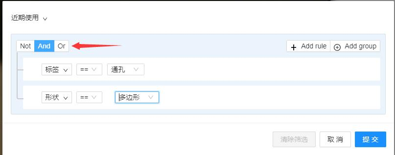
所有后续规则将由所选的操作符连接.
单击提交来应用筛选，或者如果您希望通过不同的操作符连接多个规则，请使用group.
分组
要添加组，请单击Add group按钮。在组内，您可以创建规则或组.
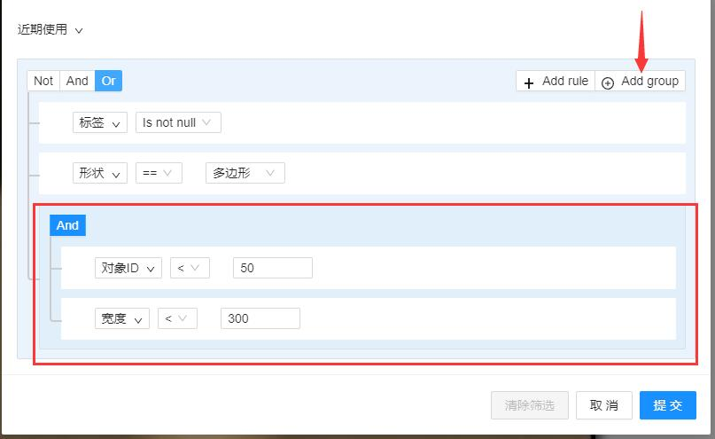
如果组中有多个规则，它们可以用And或or操作符连接.
规则组将像组外的单独规则一样工作，并将由组外的操作员加入.
您可以在其他组中创建组，为此，您需要单击组内的add group按钮.
你可以改变规则和小组。要移动规则或组，请通过按钮拖动它.
要删除规则或组，请单击删除按钮.
如果你激活Not按钮，不匹配组的对象将被过滤掉.
点击提交来应用筛选.
取消 按钮取消筛选. 清除筛选按钮移除筛选.
一旦应用，筛选框自动出现在最近使用列表中。列表的最大长度是10.
排序和筛选列表
在项目, 项目页面上的任务列表, 任务, 作业,你可以使用排序和筛选.
应用的排序和筛选将显示在您的浏览器的URL, 因此，您可以通过应用排序和筛选来共享页面.
排序
您可以按以下参数进行排序:
- 作业列表: ID, 分配人, 上次更新, 阶段, 状态, 任务ID, p项目ID, 任务名称, 项目名称.
- 任务列表或项目页上的任务列表: ID, 所有者, 状态, 分配人, 上次更新, 子集, 模式, 维度, 项目ID, 名称, 项目名称.
- 项目列表: ID, 分配人, 所有者, 状态, 名称, 上次更新.
要应用排序，请将参数拖动到水平栏上方的顶部区域. 水平线以下的参数将不会被应用. 通过移动参数，你可以改变优先级, 首先，排序将根据上述参数进行.
按下排序按钮可切换升序排序/降序排序.
快速筛选
快速筛选包含几个常用的筛选:
分配给我- 只显示分配给您的那些项目、任务或工作.归我所有- 只显示属于您的项目或任务.未完成- 只显示那些状态不是已完成的项目、任务或作业.
日期和时间的选择
当创建上次更新规则时，您可以使用选择窗口选择日期和时间.
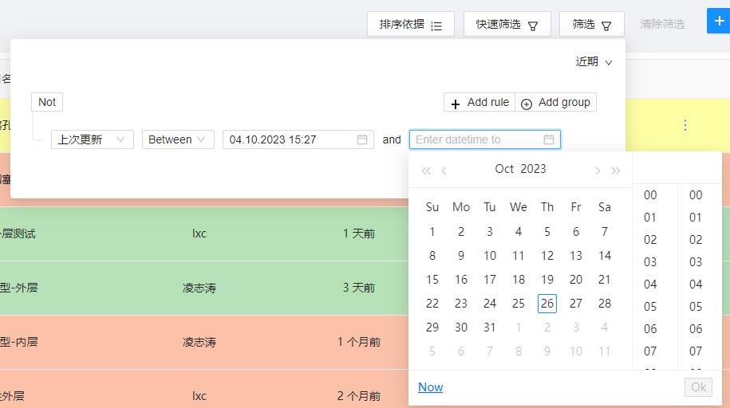
您可以使用箭头或通过单击年份和月份来选择年份和月份。
要选择日期，在日历上点击它，
要选择时间，可以使用滚动列表选择小时和分钟。
或者你可以点击Now按钮来选择当前的日期和时间。
如需申请，请按Ok.
15 - 质检
检查标注的特殊模式允许你指向帧中包含错误的对象或区域.
质检
要进行质检，您需要将任务页面上所需作业的阶段更改为验证,并分配一个用户来进行检查
现在工作会以不同的质检界面打开. 你也可以使用顶部面板的界面切换器切换到质检模式.
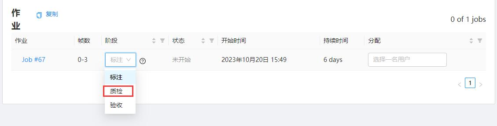
质检模式是一种UI模式，有一个特殊的问题工具，你可以使用它来识别对象
或框架中的区域，并描述问题.
-
要做到这一点，首先点击控制侧边栏上的
打开一个问题图标: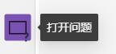
-
然后单击框架中的一个位置以突出显示该位置或通过按住鼠标左键突出显示该区域并描述问题. 要选择一个对象，右键单击它并选择
打开一个问题或选择几个快速问题之一 该对象或区域将以红色阴影显示.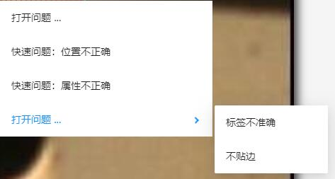
-
创建的问题将出现在工作区和对象侧边栏的
问题选项卡中. -
标记所有问题后，保存注释，打开菜单并选择作业状态
拒收或完成.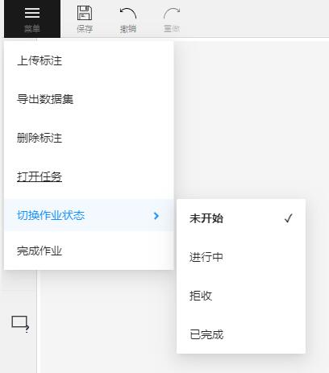
质检之后，其他用户将能够看到问题，对每个问题发表评论，并将问题的状态更改为`已解决``.
问题修复后，从菜单中选择完成作业来完成任务.
或者，您可以在任务页面中将阶段切换到验收.
解决问题
质检之后，你可以在对象侧栏的问题选项卡中看到这些问题.
-
你可以使用
问题标签上的箭头来导航包含问题的帧.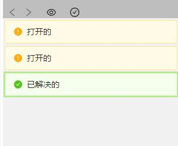
-
在工作区中，您可以单击
问题，您可以发送关于该问题的评论, 或者，如果问题已解决，则将状态更改为解决. 你可以通过点击删除来移除这个问题 (如果您的帐户有适当的权限). -
如果在一个地方创建了几个问题，您可以通过将鼠标悬停在问题上并滚动鼠标滚轮来访问它们.
如果问题解决了，您可以通过单击重新打开按钮重新打开问题.
16 - 形状分组
这个特性允许我们对多个形状进行分组.
You may use the Group Shapes button or shortcuts:
-
ctrl+G-在组模式下开始选择/结束选择 -
Esc-关闭群组模式 -
Shift+G-重置选中形状的分组
你可以选择形状，点击它们或者选择一个区域.
分组后的形状将在转储标注中包含group_id.
也可以将颜色分布从实例(默认)切换到组.
你必须切换通过组颜色分类复选框.
没有group_id的形状将以白色高亮显示.